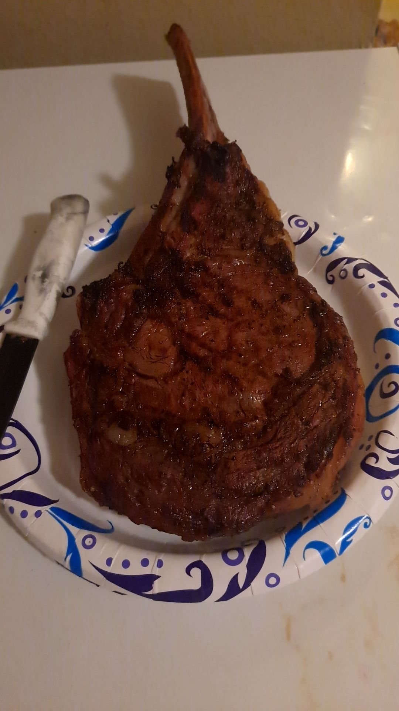
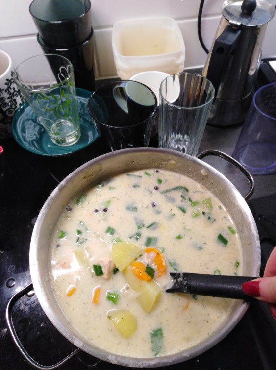
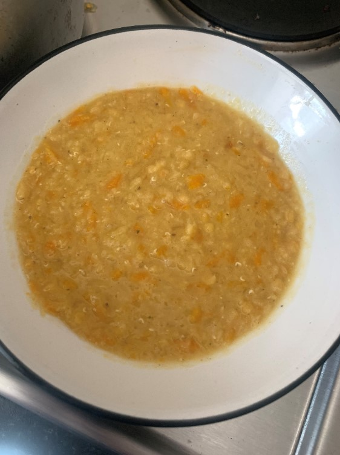
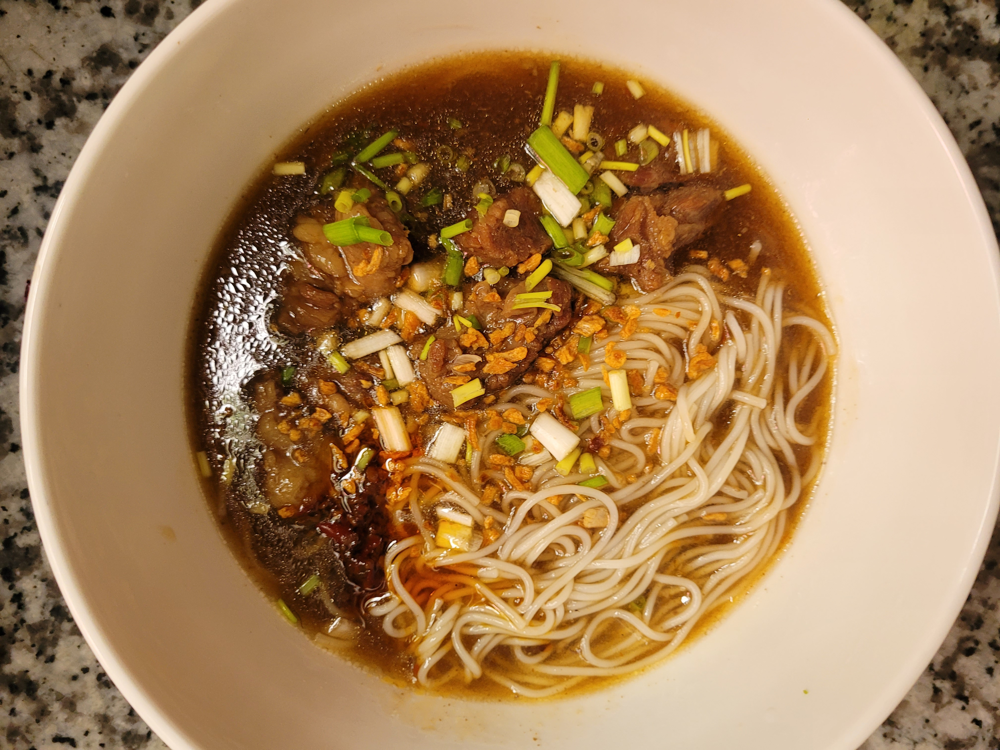
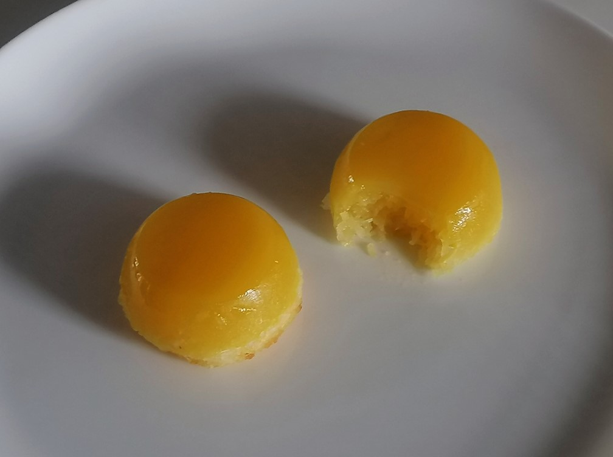
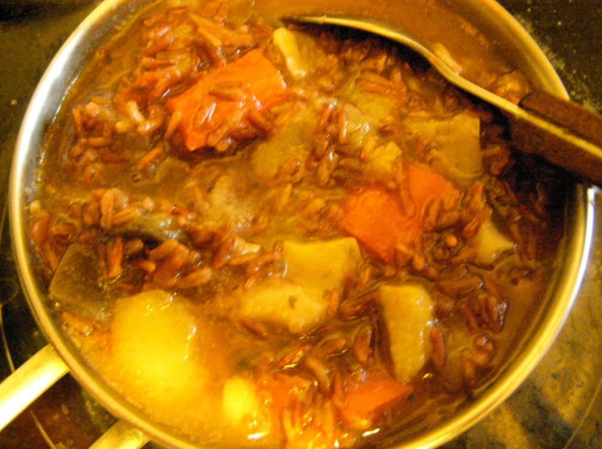
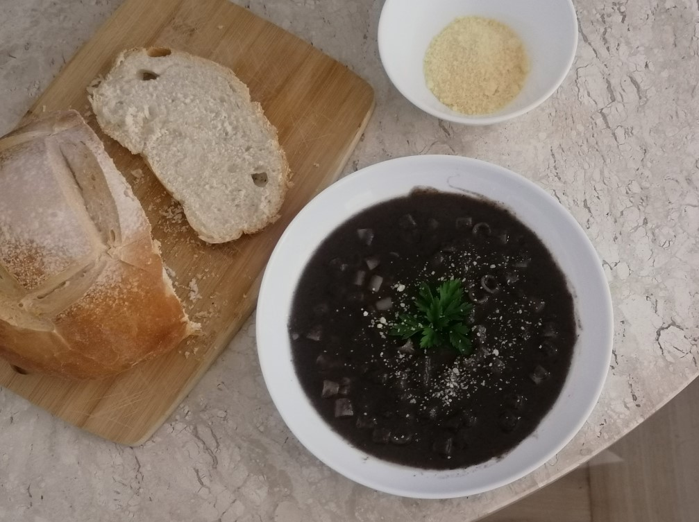

Welcome
Hello food lover, welcome to the Old Folks Cook Book. It's a very simple setup: just click on a dish to go to the recipe, then click 'Back to Recipes List' above the title of any recipe to return to the list. Enjoy your food!
Recipes List
Season 1
- The Best Steak You Ever Had [by Captain]
- Finnish Salmon Soup [by Sleep]
- Granny's Lentil Soup [by Agent Scully]
- Beef Pares [by Julia]
- Quindim [by Bela]
- Tofu Bibimbab [by Tiia]
- Chilli Con Carne with Chorizo [by sametattoos ft. Obinice]
- Untitled Zukkini Game [by V]
- Cheeseburger Noises Bowl [by Greigh]
- Veggie Pad Thai [by kitobor X ms. kitobor]
- Bean soup [by Bela]
- Spagoot Squash Unkept Josephs [by Greigh]
The Best Steak You Ever Had [by Captain]
for dinner or any
Seasoning Ingredients:
- 2 tablespoons peppercorns
- 1 tablespoon paprika
- 1 tablespoon coarse salt
- 1 tablespoon dried garlic or granulated garlic
- 1 tablespoon dill seed
- 1 tablespoon red pepper flakes
- 1 tablespoon onion powder
- 2 teaspoons coriander seeds
- 2 teaspoons mustard seeds
- Combine all spices and grind with a mortar and pestle or spice grinder. Or, place the spices in a zip top bag and crush with a rolling pin or heavy skillet.
- Store in an airtight container at room temperature.
- 4 tablespoons seasoning mix
- 1/4 cup oil
- 1 tablespoon coarse salt
- 1 tablespoon dried garlic or granulated garlic
- 1/4 cup water
- 4 tablespoons red wine
- 2 pounds steak
- Mix marinade well.
- Place steaks in large food storage bag or other air tight container.
- Pour marinade over steaks, ensuring each steak gets equal amounts of seasoning mix.
- Place in fridge for no less than two hours (no more than 24 hours), rotating steaks every 30 minutes or so.
- When ready to cook, ensure grill has medium to high heat.
- Place steaks on grill for 4 minutes on the first side.
- After four minutes, flip the steaks and pour remaining marinade on steaks. Watch for fire flare ups.
- 4 minutes on each side should give you a nice medium rare steak.
- Let rest at least 4 minutes before eating.
Finnish Salmon Soup [by Sleep]
for lunch or dinner
Ingredients:
- 6 potatoes
- 1-2 carrots
- some spring onions (about the same amount as 1-2 regular onions, you can also sub those)
- 2 tbsp of butter
- 2 tbsp of flour
- 1 liter of fish broth (i used broth cubes, if you don't have that, you can just use 1 liter of water and throw in salt to taste, starting with 1-1,5 tsp and adding more once it's done if needed)
- 8-10 whole allspice berries + like 5 whole peppercorns
- 2dl of cream (any type will do really)
- 400g of salmon, fresh or frozen
- dill
Method:
- chop all veggies and fry them in the butter for about 2mins. add the flour and mix until it coats the veggies. add water + salt/fish broth and the pepper and allspice. boil until veggies are cooked.
- do anything you need to do to prepare the fish (skin+bones off) if using fresh fish and add the fish to the soup. boil for 3-5mins if using fresh fish and for about 10mins if frozen. also add the cream at this point. once that's done, taste and add dill to taste and also check if there's enough salt. finish with green spring onion ends. then enjoy, u did a food
Granny's Lentil Soup (Scottish) [by Agent Scully]
for lunch or dinner
Ingredients:
- 250g of red lentils
- 4 carrots
- Half a turnip
- 2 chicken stock cubes
- Salt and Pepper to taste
- Water
Method:
- Grate the carrot and turnip and add to a pot with the lentils and stock cubes on top
- Depending on how thick you like your soup, add water. For a thick soup, just add enough water to cover everything
- Bring to the boil for about 15 minutes then turn down to a medium heat to simmer until the lentils and veg are soft and cooked and the stock cubes have dissolved. Add salt and pepper to taste and more water if the soup is too thick
- Serve with some nice bread and enjoy!
Beef Pares [by Julia]
for lunch or dinner
Beef Pares (Braised Beef Stew) - pares means pair, and traditionally this stew is paired with fried rice and clear broth, but in my house we instead serve it with noodles. but you do you fam
Ingredients:
- 750 g brisket
- 250 g flank steak (choose the one with more fat and tendon)
- 4 pcs star anise
- 1 long cinnamon stick
- 4 pcs bay leaf
- 1 tbsp peppercorns
- 3-4 tbsp oil
- Medium sized ginger, sliced into ¼ in pieces
- Large onion, sliced
- 1 mf HEAD of garlic, chopped :peepoinlove: yeeee
- ½ cup sugar
- ¼ cup soy sauce
- ¼ cup fish sauce (use fish sauce, not fish-flavored sauce. fish flavored sauce is bs, fish sauce is the real game!!)
- 1 pc beef bouillon cube
- 2 tsp chili powder (omit if you no likey spicy)
- Water, enough to cover up to 1 inch above your meat when u pressure cook it
- ¼ cup cornstarch
- Water
- Fried garlic bits
- Sliced green onions
- Chili garlic oil
Method:
- In a pressure cooker pot, fry spices (star anise, cinnamon bark, whole peppercorns) in oil.
- Once fragrant, add in the aromatics (ginger, onion, garlic). Stir fry until the ginger and garlic turn light brown and the onion translucent
- Stir in the meat and brown it. no need to cook all the way through as you will pressure cook these bad boiz anyway
- Add the rest of your seasonings (sugar, soy sauce, fish sauce, beef cube, chili powder). Saute for a few more minutes and then add in the water. Water needs to cover the meat or up to an inch above it
- Pressure cook for 30 minutes or until the meat is tender but still in tact
- After pressure cooking, check your soup level. Since you’re essentially making noodle soup, you might need to add more water if you feel like much of the broth has boiled off. Add your cornstarch slurry a little at a time (note! Only add up to your desired thickness)
- You’re almost freakin done!! Now it’s time to plate! Serve the beef pares with noodles/garlic fried rice. If you’re doing noodles, you may use tomoshiraga somen noodles or any other japanese style noodle that’s thin and tender. If you want thick and chewy, you may also use udon. If you’re doing fried rice, PRO TIP: use fish sauce to umami-mize your fried rice
- DO.NOT.SKIP.THE.TOPPINGS! Use as much fried garlic bits, spring onions and chili garlic oil as you want. These cut the richness of the stew and just ties up the dish overall.
- Pat pat your back for doing a goody good job and enjoy your bowl of beef pares with the ones you love!! :ofexcited:
Quindim [by Bela]
It’s a dessert! And it’s particularly popular in celebrations. It comes from a Portuguese recipe that had to be adapted to local ingredients, nuns would use the egg whites to starch clothes and with the egg yolks they would make these. We don't starch clothes anymore, but we can still keep the egg whites to make some healthy, fitness meals later.
Ingredients:
- 10 egg yolks
- 1 cup of sugar
- 2 tablespoons of butter (melted)
- ½ cup of grated coconut
- ½ cup of milk (if you're grating a fresh coconut, you won’t need milk and you can skip step 1)
Method:
- Mix the grated coconut and the milk and let it rest for 10 minutes to hydrate;
- Pre-heat the oven to 200°C / 390°F;
- Sift the egg yolks and dispose of the thicker part that doesn’t go through the sieve;
- Add the sugar, butter and grated coconut to the egg yolks and mix;
- Grease (with butter) and sugar the pan*;
- Pour the quindim mix into the pan. If you’re using one larger pan, cover it with foil. If you want there to be a coconut “crust” in the bottom of the quindim, let it rest for 10 minutes before baking it;
- Put the pan inside a wider pan (any roasting pan will do) and add 1 to 2 inches of boiling water, so the quindim will bake in a bain-Marie;
- Bake it at 180°C/360°F for around 40 minutes. You can check if the quindim is ready by poking the centre of it with a toothpick, if the toothpick comes out clean, it means the quindim is baked;
- Let the quindim sit for a while and unmold it when it’s warm enough to be handled (don’t let it cool completely!). You might want to gently run a knife around the edges of the pan before, to make sure there’s nothing sticking to the sides of the pan. Then just flip it over any straight surface and tap the bottom of the pan if you need to;
- FOOD TIME
* As a pan, we use small cupcake/muffin/tart pans or a larger baking pan with a hole in the middle. The quindim won’t grow so you don’t have to leave empty space, but keep in mind they aren't supposed to be tall like cakes.
Tofu Bibimbab [by Tiia]

The dish that’ll soothe your sweet tooth as well!
Tofu ingredients:- 200-300grams of tofu (firm)
- ½-1 tblsp grated ginger (to taste)
- 2tblsp sesame oil (or anything you have)
- 3tblsp soy sauce (I recommend the less salted version)
- 2tblsp brown sugar (the sticky kind is the best)
- 1 garlic finger
- 1tblsp gochujang paste
- 2tblsp water
- 2tblsp sugar
- 1tblsp oil
- 1tsp vinegar (I’ve used rice wine vinegar)
- 1-3 tblsp (toasted) sesame seeds
Method:
- Cut tofu into cubes and press excess water out of them. Preferably leave them under a towel for 10-30mins to get all excess water out.
- Mix sauce ingredients.
- Heat up oil in a pan and add tofu. Brown tofu and take out of the stove. Add ginger, garlic, sugar and soy sauce. OBS! Sugar will burn if you put that in when the pan is still on the stove, mix well!
- You can add sauce in the tofu or pour in on top later (it is very spicy so I recommend tasting a bit first before pouring all in)
- Serve with for example rice, julienned carrots and avocado. Garnish with extra sesame seeds and spring onion. Enjoy :heart:
Chilli con carne with chorizo [by sametattoos ft. Obinice]
 Ingredients:
Ingredients:
- 500 grams of ground beef
- Chorizo sausage
- 2 cans of chilli beans
- 1 can of black beans (or whatever beans you like really)
- 1 can of diced tomatoes
- 1 can of tomato paste (the small one)
- 1 onion
- 3 stalks of celery
- green/yellow/red pepper (how ever much you like)
- 1 hot pepper
- Bacon pieces
- 4 cubes of bouillon
- bottle of dark beer
- Garlic to your hearts desire
- 1 tablespoon of Worcestershire sauce
- Tabasco (I really like the smoky tabasco)
- Chilli powder, dried oregano, ground cumin, dried basil, salt, pepper, cayenne pepper, paprika powder.
Method:
- Cut all vegetables in bite sized pieces. I like my chilli a bit chunky so I go for rougher pieces. Cut the chorizo in bite sized pieces, fry in a large pot.
- Add ground beef until brown.
- Add all vegetables and fry it a bit more. Add the beans (drain everything but the chilli beans).
- Add the tomato cubes. add the beer. throw in a few bouillon cubes. Stir.
- Now, this is the tricky part because I never measure the spices. The original recipe calls for a tea spoon of everything so that's a good starting place. Stir.
- Let it simmer until it's getting thicker. Be prepared for it to take hours.
Can be made in a slowcooker or just a big pot.
Eat with cheddar cheese, tortilla chips and creme fraiche. It gets thicker overnight (which makes it EVEN BETTER) and works fantastic in burrito's
Untitled Zukkini Game [by V]
 Ingredients:- 1 green zukkini
- 1 medium aubergine
- 2 medium-sized red peppers
- 2 medium-sized tomatoes
- Rice/grain - see below
Method:
- Prepare the grain - in this case, red rice is being used, but brown rice or even millet would work too. Grain is best to be al-dente and prepared before meal.
- Cut all veg up to bite-sized, add salt per taste (I use a ready mix of salt and some seasonings, but simple salt or seasalt works too), stew on slow heat under tight lid till tender, minding that the juice stays present, add a bit freshly boiled water if it runs low. Add vegetables per person preference (generally 3 spoons of vegetables + gravy per serving). Prepared vegetables keep well in a functional fridge for a week. If cooking for a large family, can go with 2 zukkinis, 1 or 2 aubergines, 3 large peppers and tomatoes respectively
Cheeseburger Noises Bowl [by Greigh]
Ingredients:- Four sprays of cooking spray
- 1 pound uncooked extra lean ground beef 96 % lean 4% fat
- 1 small, finely chopped onion
- 1 tsp kosher salt
- 6 cups chopped romaine lettuce
- 4 medium, diced plum tomatoes
- 12 slices kosher dill pickle sandwich slices
- 8 tbsps shredded reduced-fat cheddar cheese
- 1 tbsp ketchup
- 2 tbsps light mayonnaise
- 1½ tsps mustard
- ½ tsps Worcestershire sauce
- 1 tbsp minced onion
- 2 tbsps chopped, unsweetened dill pickles
- Coat large nonstick skillet with nonstick spray and heat over medium-high.
- Add beef, onion, and salt and cook, breaking up meat with wooden spoon, until beef is cooked through and no longer pink, 7 to 9 minutes.
- Let cool. Set aside or divide beef mixture among 4 small microwavable storage containers.
- Place 1½ cups lettuce each in 4 medium bowls or storage containers. Top each bowl with 1 chopped tomato, 3 pickle slices, 2 tbsp cheese, and red onion (if using).
- In small bowl, stir ingredients for special sauce: ketchup, mayonnaise, mustard, Worcestershire sauce, minced onion, and chopped pickles. Set aside, or divide sauce among 4 small baggies or storage containers.
- Pack beef containers with lettuce containers and special sauce and refrigerate.
- Before serving, heat beef and place on top of salad. Serve with special sauce. Serving size: 1 bowl (about 2 cups)
Veggie Pad Thai [by ms. kitobor]
Ingredients per person:- 2 cloves of garlic (sliced thin)
- Quarter of a red onion (chopped)
- 2 eggs
- 4 spring onions (cut them into 2cm pieces)
- 150g (1 nest) rice noodles
- Fresh coriander leaves
- Handful of crushed peanuts
- Handful of beansprouts (remove seeds)
- 1 tablespoon of soy sauce
- 1 teaspoon of sugar
- 1 teaspoon lemon juice
- 3 tablespoons of vegetable oil
- Chilli flakes (as much as you like!)
Method:
- Put rice noodles in a bowl of boiling water and leave for at least 5 minutes.
- Oil in a wok, medium heat
- Once oil is warm (but not too hot) add garlic and onion, stir until it smells good. Onion should be soft and garlic golden.
- Break eggs in and don't touch them until the egg whites set. Break the egg apart with a spatula and mix with the onion and garlic.
- Add noodles (check they are soft enough, add a bit of water with them if not)
- Add soy sauce and sugar. Stir and taste - add more if needed.
- Add crushed peanuts and chilli flakes. Stir.
- Turn the gas/heat off.
- Add beansprouts, coriander, spring onion. Stir well.
- Put crushed peanuts and chilli flakes in a pile on the side of the plate for mixing in.
- Add lemon juice.
- Make sure there is no water left from the noodles.
- Enjoy!
Bean soup [by Bela]
Serving: 4 servings or one very hungry couple!
Bean soup can be served as a main dish, but it’s also commonly served as a side dish in a glass or mug, when it’s done without pasta and bacon. You'll find beans in every Brazilian household and this recipe is usually done with leftover beans, but we can obviously cook beans just for that or use canned beans.
Ingredients:- 2 cups of cooked beans*, it can be black beans or pinto beans
- 2 cups of water
- 1 medium onion
- 1/3 cup (roughly) of parsley and/or scallion
- 3 minced garlic cloves
- 1/2 cup of pasta, preferably small sized (I used ditalini)
- Black pepper
- Salt
- Optionally, you can add 1 cup of chopped bacon and/or sausage
* If you’re cooking the beans, 1 cup of dried beans is more than enough.
Method:
- Add the beans, water, onion and parsley/scallion to the blender and blend it until everything is mixed well;
- In a pan, fry the garlic and the bacon/sausage;
- Add the bean mix to the pan and heat it;
- When it starts to boil, add the pasta and cook it at low heat until the pasta is ready;
- Add salt and pepper. If the soup is too thick just add more water;
- Eat ALL the soup!
It can be topped with bread, crispy kale, grated cheese, pork crackling, farofa…
Spagoot Squash Unkept Josephs [by Greigh]
Also known as Spaghetti Squash Sloppy Joes
Ingredients:- 3½ pounds uncooked spaghetti squash
- 1 large squash, halved lengthwise and seeded
- Cooking spray - 5 sprays
- ½ cup finely chopped onions
- 8oz uncooked 99% fat-free ground turkey breast
- 1 cup canned tomato sauce
- 2 tsps brown sugar
- 1 tsp chili powder
- ¾ tsp garlic powder
- ¾ tsp onion powder
- ½ tsp kosher salt
- ⅔ cup shredded low fat cheddar or colby cheese
- 2 tbsp thinly sliced scallions
- Preheat oven to 425°F.
- Line a baking sheet with aluminum foil and coat foil with cooking spray. Coat cut sides of squash with foil and arrange squash cut side down on prepared pan. Roast until strands of squash separate when scraped with a fork, about 35 minutes. Remove from oven and cool slightly. Scrape all squash into strands, leaving strands inside squash shells.
- Meanwhile, heat a medium nonstick skillet over medium heat. Coat pan with cooking spray. Add onion and cook 2 minutes. Add turkey to pan and cook until turkey is cooked through, stirring to crumble, 3-5 minutes. Add tomato sauce, brown sugar, chili powder, garlic powder, onion powder, and salt. Bring to a boil. Reduce heat to low, and simmer until thickened, about 3 minutes.
- Preheat broiler to high. Divide turkey mixture evenly between squash halves. Top evenly with cheese. Broil until cheese melts, about 2 minutes. Sprinkle evenly with scallions. Serving size: 1 filled squash half
Mayo on Pineapple Pizza [by Raven and Status]
Ingredients:- Mayonnaise
- Pineapple
- Pizza
- No self respect
- Ruin a perfectly good pizza with mayonnaise and pineapple.
- Cry.
Credits
- 'OF Spaghetti Hoops' image by Bela
- Concept inspired by Captain Eddie
- Webpage by kitobor
- Much love to everyone that submitted a recipe!